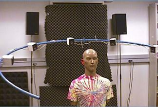
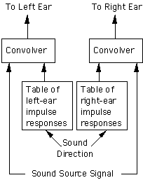
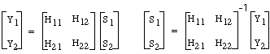

4.5. Sistemas basados en HRTF
Los sistemas basados en las funciones de transferencia HRTF son capaces de simular elevación, distancia y azimut. Esto significa que, al menos en principio, pueden crear la impresión de un sistema en 3D. En la práctica, es más sencillo controlar el azimut que la elevación y la distancia debido a las diferencias entre las personas y las limitaciones computacionales. Aún así, los sistemas basados en HRTF están convirtiéndose en un estándar para sistemas avanzados de 3D.
Hacemos una pequeña descripción del “Convolotron”, un conocido sistema 3D desarrollado por la NASA. Describiremos algunas características y terminaremos con distintos modelos HRTF elaborados.
- El Convolvotron
- Auriculares versus Altavoces
- La necesidad de posicionar la cabeza
- Versiones modeladas y experimentales de HRTF’s
- Modelos para HRTF’s

El Convolotrón

El Convolotron, manufacturado por Cristal River Engineering, es una forma sencilla de usar HRTF para el audio espacial. Consiste en dos convolucionadores, cada uno de los cuales convoluciona una misma señal de audio con una respuesta al impulso discreta de la cabeza (Head-related impulse response - HRIR) tomada de una tabla de valores previamente medidos. La salida va directamente a los auriculares del usuario.
Si la HRIR es lo suficientemente parecida a la del usuario, obtendremos resultados aceptables. La idea básica de funcionamiento es:
- Podemos recrear muchas fuentes haciendo lo mismo para cada fuente.
- Podemos tener en cuenta el movimiento de la cabeza, monitorizando su posición y modificando las HRIR según la misma, dando así la sensación de que el usuario se mueve en un ambiente 3D.
- Las tablas pueden crearse considerando solo los parámetros de azimut y elevación, dejando la distancia de la fuente para utilizar efectos de rango/amplitud.
- El número de HRIR almacenados previamente puede reducirse analizando funciones HRIR críticas en el espacio y luego interpolando para hallar el resto.
- Los ecos y la reverberación de la habitación se pueden añadir con un modelo simulado de una habitación.
- El sistema puede personalizarse para un individuo particular usando sus funciones HRIR.
No importa cómo implementemos el esquema, la idea principal es generar señales adecuadas para ambas orejas con una convolución en tiempo real de la señal original monoaural, utilizando tablas de respuesta al impulso (HRIR).
Auriculares vs Altavoces
Los auriculares simplifican el problema de enviar distintas señales a cada oído, pero presentan inconvenientes, especialmente en realidad virtual:
- A muchas personas no les gustan los auriculares, son incómodos incluso si son inalámbricos. Los mejores (acústicamente) son incómodos para llevar durante largos períodos y aíslan socialmente al usuario.
- La respuesta en frecuencia de los auriculares puede tener picos y cortes que se asemejan a las respuestas del pabellón auditivo. Estos efectos, si no se compensan, pueden dar problemas en los parámetros de elevación.
- Los sonidos en los auriculares dan la impresión de estar demasiado cerca. Además, los efectos utilizados para dar localización del sonido son muy sensibles a la posición del auricular.
Los altavoces resuelven muchos de estos problemas, pero no está claro cómo dar un sonido binaural. Una solución es una técnica llamada cross-talk-cancelled stereo (o transaural stereo).

La idea básica se ve bien en el dominio de la frecuencia. En la figura de arriba se ven las señales S1 y S2 que salen de los altavoces. La señal Y1 que alcanza la oreja izquierda es una mezcla de S1 y el “crosstalk” de S2. Así, Y1 = H11 S1 + H12 S2, donde H11 es la HRTF entre el altavoz izquierdo y la oreja izquierda, y H12 es la HRTF entre el altavoz derecho y la oreja izquierda. Similarmente, Y2 = H21 S1 + H22 S2. Si pudiéramos usar auriculares, podríamos obtener Y1 y Y2, que son las señales recibidas en los dos oídos respectivamente. El problema es encontrar las señales apropiadas S1 y S2 que nos dan los resultados deseados. Esto matemáticamente es bastante sencillo: simplemente invertimos las ecuaciones:

En la práctica, invertir las matrices no es tan sencillo:
- A frecuencias bajas, todas las funciones de transferencia son prácticamente idénticas, y por lo tanto la matriz es singular (el determinante es cero). Afortunadamente, en recintos reverberantes, la información de baja frecuencia no es muy importante para la localización.
- Una solución exacta produce una respuesta al impulso muy larga. Este problema es notable cuanto más alejada esté la fuente respecto al punto medio entre los dos altavoces.
- El resultado depende de la posición relativa del usuario con respecto a los altavoces. Los resultados óptimos se obtienen en un punto llamado “sweet spot”, que es la posición asumida cuando se invierten las ecuaciones anteriores.
Si se hace bien, la técnica “crosstalk-cancelled stereo” puede ser muy efectiva, consiguiendo variar tanto el azimut como la elevación. La fuente puede situarse fuera de la línea que une los dos altavoces.
Registro de la posición de la cabeza
Cuando utilizamos auriculares, si el usuario se mueve o mueve la cabeza, las señales enviadas a los auriculares no varían, produciendo la sensación de que la fuente de sonido se mueve con el usuario. Esto no se puede dar en aplicaciones de realidad virtual. Además, algunos efectos espaciales son debilitados o anulados. Esto es un problema, especialmente para fuentes que se suponen directamente enfrente o detrás del usuario, ya que la velocidad de variación de las variables es mucho más rápida en esas direcciones. Un resultado típico es que las fuentes aparezcan demasiado cerca o incluso den la impresión de que se originan en la cabeza.
Una solución posible es usar un dispositivo que registre la posición relativa de la cabeza con respecto a las fuentes (head tracker) y lo haga periódicamente, variando las HRIR según los datos obtenidos. En este sentido, al diseñar, además del coste, fiabilidad y precisión, deben considerarse otros dos aspectos:
- Retardo permitido (Allowable latency). El retardo es el tiempo entre el movimiento y cuando se utiliza la HRIR corregida. La experiencia indica que debería ser como máximo de 50 ms.
- Transiciones inadecuadas (Unwanted transients). Al cambiar las HRIR por otras más adecuadas, pueden escucharse “clicks”. Es deseable una transición suave en estos casos.
Versiones modeladas y experimentales de HRTF’s
Debido a que las funciones HRTF son complejas, la mayoría de los sistemas desarrollados han dependido de funciones medidas experimentalmente con el KEMAR. Sin embargo, los efectos de elevación y de azimut son particularmente sensibles a las diferencias individuales. Han surgido cuatro aproximaciones diferentes para estas funciones:
- Usar una HRTF estándar. Esto da resultados pobres en un porcentaje de la población, pero es el único sistema práctico para productos baratos. Actualmente, ni el IEEE, ni ACM o la AES han definido un estándar HRTF, pero parece que una compañía como Microsoft o Intel creará uno.
- Usar un set de HRTF’s estándar. Esto requiere medir HRTF’s para un grupo pequeño de personas que representen distintos modelos de la población, facilitando así la selección del usuario más adecuado. Hasta la fecha, no existe.
- Usar una HRTF individualizada. Esto requiere medir la HRTF del usuario, lo que conlleva un considerable tiempo de uso. Aunque es engorroso y probablemente no viable, es el que mejores resultados ofrece.
- Usar un modelo HRTF que contenga parámetros adaptables. Para estos modelos se sugiere consultar la bibliografía, ya que es un tema extenso y se sale del propósito de este trabajo.